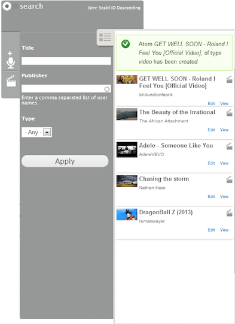
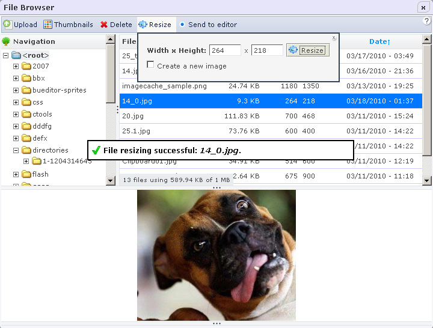
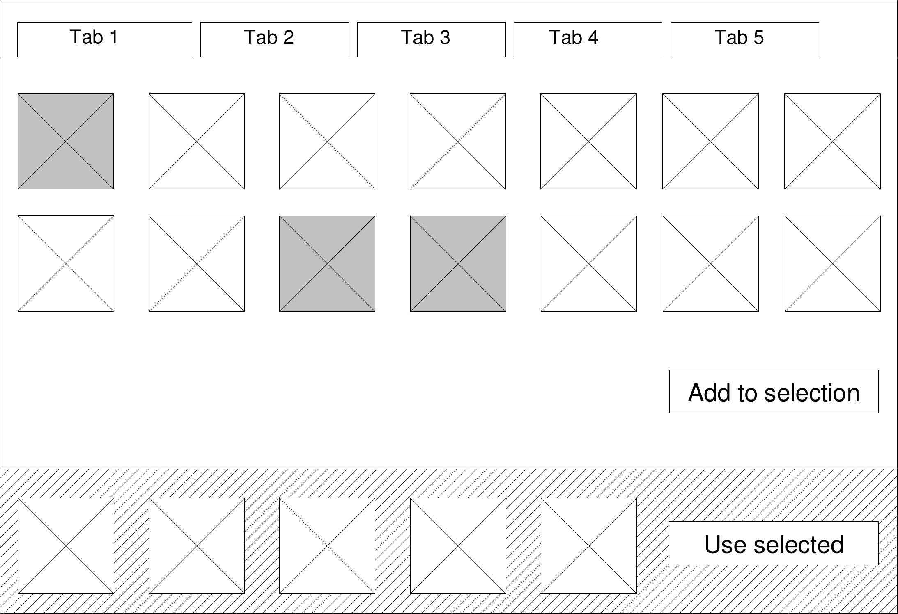
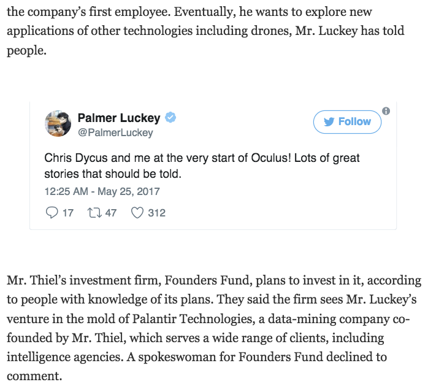

Everybody cheer! Here comes media!
Saša Nikolič, Tadej Baša

Saša Nikolič
 sasanikolic /
sasanikolic /

Tadej Baša
paranojik /
Overview
- Struggle with Drupal 7
- Drupal 8 out of the box
- Media entity and Media in Core
- Entity selection with Entity browser
- Embedding entities
- Image Cropping
- Questions
Required modules
- Drupal 8.4-dev (with Media enabled)
- Video Embed Field
- Embed and Entity Embed
- Inline Entity Form
- Ctools
- Entity Browser
- DropzoneJS
- Crop API, Image Widget Crop, Focal point
The struggle
- Nothing out-of-the-box?
- File fields
- Image fields
- Cannot reuse files
- Cannot add fields to files
Have no fear, contrib is here!
... the struggle continues
- Media module
- Media oEmbed for remote resources (YouTube, Vimeo)
- Media CKEditor
- Entity Embed
… that’s “ok”... because of modular architecture
SCALD

Source: https://www.drupal.org/project/scald
IMCE

Source: https://www.drupal.org/project/imce
Source: https://www.brainvire.com
... or is it ?!
Drupal 8 “out of the box”
- Basic image upload
- CKEditor + embedding
- Basic file listing with usage info
- Limitations (still)
- Cannot reuse files
- Embedding supports only images
- Cannot add custom fields to files
- Cannot reference remote media
Media initiative
- Prague - NY - New Orelans
- Media_entity ecosystem
- Ability to reuse content
- Media library
- Remote media sources
- Generic solution for media handling
- Metadata
- Embedding
- Cropping
Media entity
- Propagate storage to fields
- Media sources provide metadata:
- Thumbnail
- Description
- Size
- Mapping of metadata to entity fields
Media entity in core
- Media Entity -> Media in Drupal 8.4
- Improved API
- Basic types: Image, Document (now in core)
- Contrib:
- Video (video_embed_field)
- Twitter (media_entity_twitter)
Entity browser
- Selecting from library
- Creating a new item while referencing
- Uploading multiple images at once
- More complex workflows
Entity browser - architecture

Source: https://slashrsm.github.io/entity-browser-session/#/architecture-wireframe
Entity browser in use
- As an entity reference field widget
- As a file/image field widget
- With Entity embed
- In a custom form (as a form element)
- In combination with Inline Entity Form
Entity browser goes to 11
Embedding media

Source: https://www.nytimes.com
Entity embed
"The Entity Embed module allows any Drupal entity to be embedded within a text area using a WYSIWYG editor."
Embed anything
- Video
- Related article (node)
- List of related articles (Taxonomy)
- Related product (Commerce product)
- Discussion thread (Comment)
- ...
Getting there...
Image cropping
Crop API
- Storage for all cropping solutions
- Handling crops based on:
- Region - storing a crop area
- Reference point
Image widget crop
- Specify exact crop region
- Manual - It’s a field widget
- A lot of manual work if we have to define many crops
Focal point
- Crop around a selected point
- Semi-Automatic
Media team - #mediaintiative
Cheer!
JOIN US FOR CONTRIBUTION SPRINT
Friday, 29 September, 2017
Mentored Core Sprint
9:00-18:00
Room: Stolz 2
|
First time Sprinter Workshop
99:00-12:00
Room: Lehar 1 - Lehar 2
|
General Sprint
9:00-18:00
Room: Mall
|
#drupalsprints

 @sasanikolic90
@sasanikolic90